-
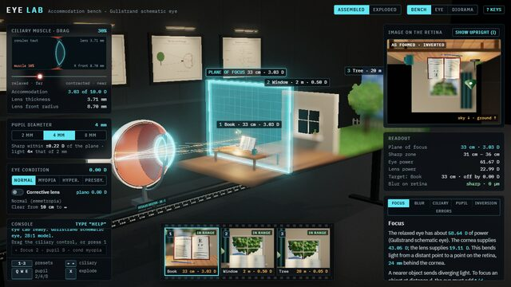
-
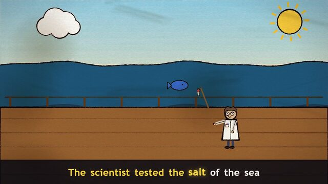
Clawd Goes to Sea
A music video with a sea shanty that was composed and animated in code.
Based on the Clawd music video by @other__reality
-
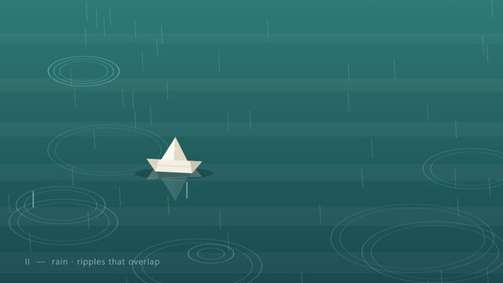
Small Weather
A short film made only in code: six patterns in water and air, for piano and cello.
Based on a short film by @devteamdrew
-
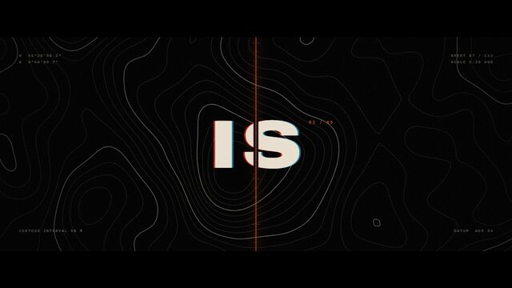
Meridian
A film title sequence from one prompt: kinetic type, contour maps, sound.
Based on a motion showreel by @stephanlivera
-
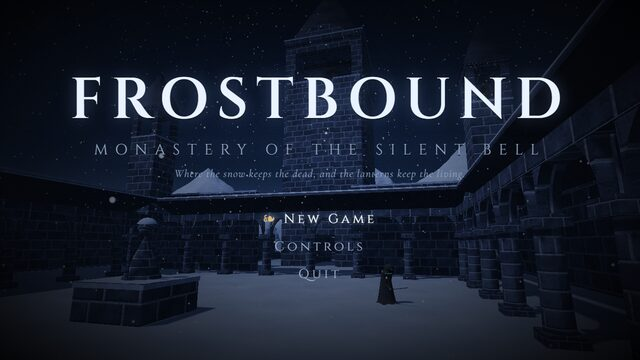
Frostbound Monastery
A soulslike game in a snowbound monastery, with shrines, respawn and a bell tower.
Based on a Dark Souls-style game by @The_Alex
-
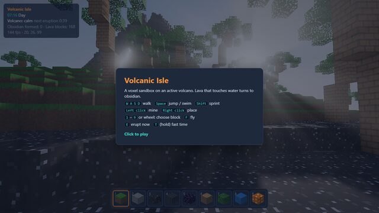
The Volcano Test
A voxel sandbox on an active volcano. Pour water on lava and it turns to obsidian.
Based on "The Minecraft Test" by @noahwachnik
-
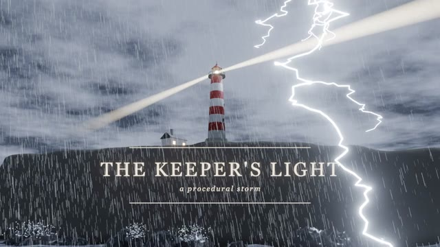
Storm Lighthouse
A lighthouse in a storm, built procedurally in Blender with no imported assets.
Based on a procedural Blender castle by @Stefan_3D_AI
-
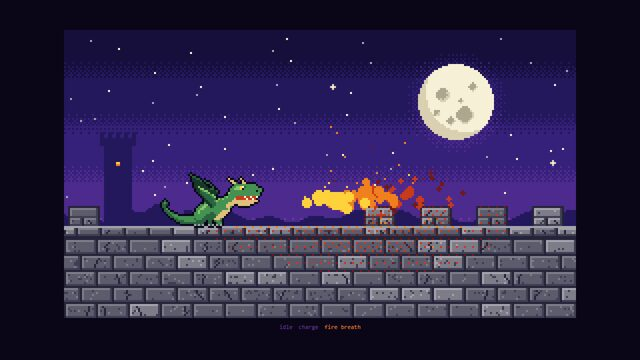
Pixel Dragon
Pixel art drawn in pure code, 24 colours: idle, charge and fire breath.
Based on a pixel-art wizard by @majidmanzarpour
-
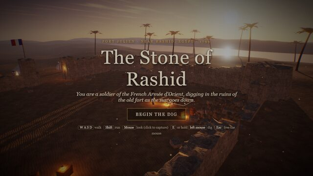
The Stone of Rashid
Dig up the Rosetta Stone as a French soldier in 1799, then solve its three scripts.
Based on an Antikythera mechanism game by @edwinarbus
-
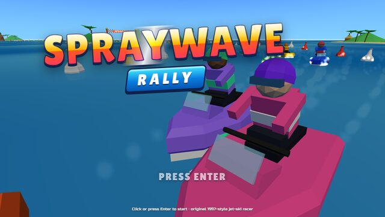
Spraywave Rally
A one-shot jet-ski racer in the style of a late-1990s console game.
Based on a kart racer by @bridgemindai
-
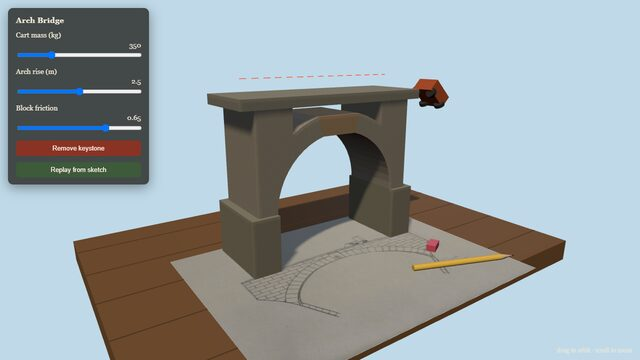
Arch Bridge
A pencil sketch becomes a stone arch bridge with physics. Send a cart across or pull the keystone.
Based on sketch to 3D trebuchet by @poolio
-
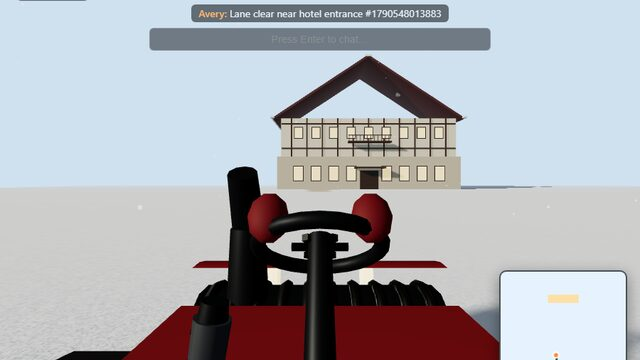
Snow Day
First-person multiplayer snow clearing. It needs a Node.js server, so it runs on your PC only.
Based on multiplayer lawn mowing by @_MaxBlade
-
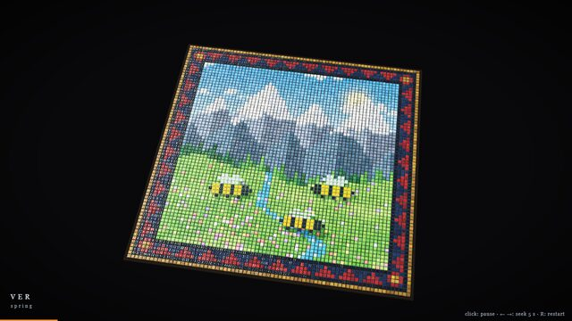
Four Seasons in Glass
A glass-tile mosaic film of one meadow, from spring into winter.
Based on a glass-tile mosaic film by @LCSlates
-
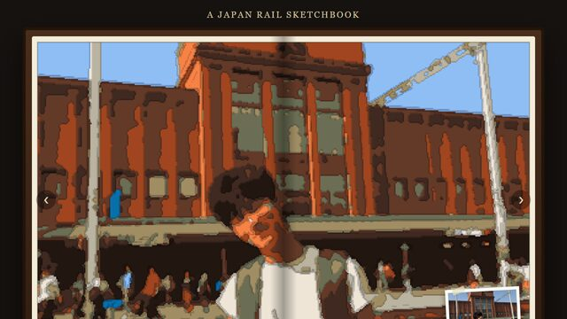
A Japan Rail Sketchbook
A rail trip across Japan, drawn in acrylic marker. Turn the pages with a page curl.
Based on a New Zealand trip in markers by @ann_nnng
-
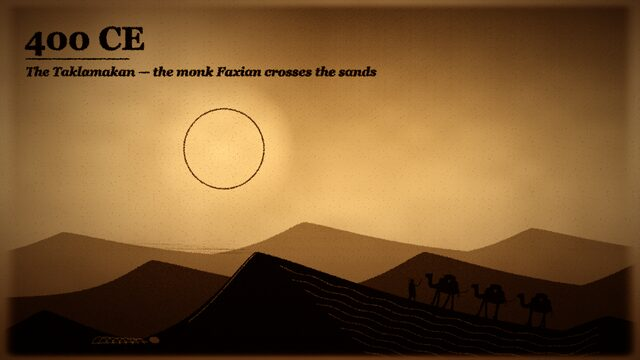
Silk Road in Sand
A sand-art film of the Silk Road, 130 BCE to 1453 CE, with music made in the browser.
Based on a sand-art film of US history by @Michaelzsguo